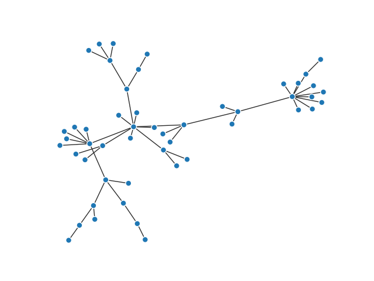

Note
Click here to download the full example code
A dead simple network¶
The simplest way to plot a graph ever. And yet it looks cool!
import networkx as nx
import matplotlib.pyplot as plt
from grave import plot_network
# Generate a networkx graph
graph = nx.powerlaw_cluster_graph(50, 1, .2)
# Plot it
plot_network(graph)
Total running time of the script: ( 0 minutes 0.047 seconds)